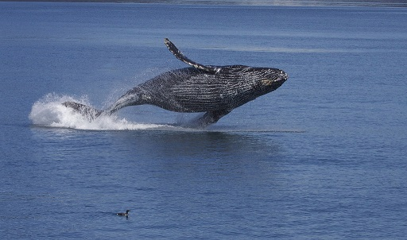
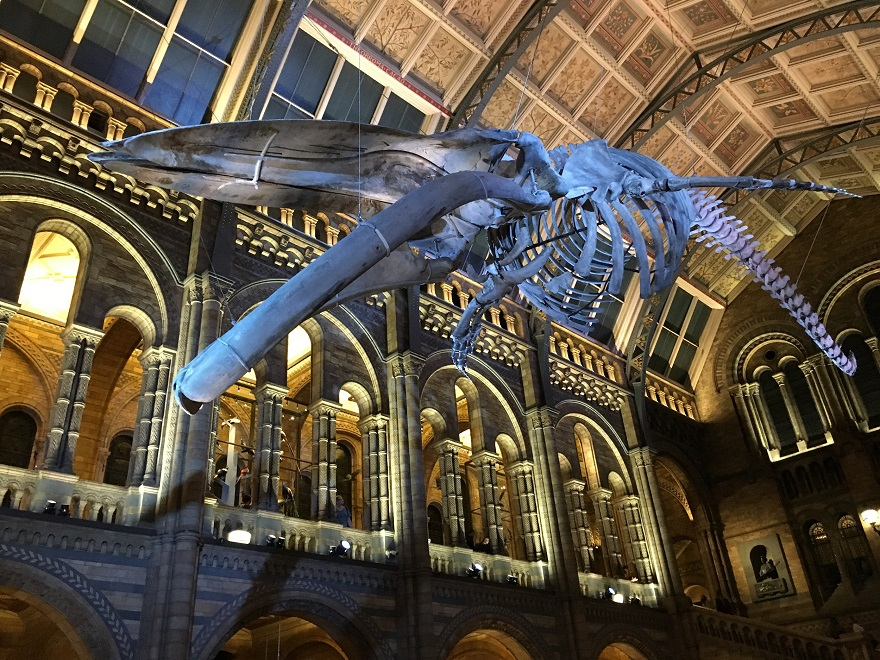

5 Human impact¶
In the introduction to this course, you considered the success of the mammals as a whole. You would probably also agree that the aquatic mammals are a successful group too. However, there is another mammal that has been successful in a different way and has challenged the success of some of the aquatic mammals.
There is only one species of human, but its capacity to occupy and exploit almost all ecosystems has brought conflict. The seals and whales have been hit hard by the impact of humans harvesting them for fur, food and oil. Whale populations have suffered huge losses. Just one illustration of this is a series of figures for the number of whales caught in just one small area of the Southern Ocean around the South Shetland and South Orkney Islands in a period of 19 years during the height of Antarctic whaling. The figures come from a plaque originally on the site of a Norwegian whaling station on Signy Island.
Species | right | blue | fin | sei | humpback | sperm | Total |
|---|---|---|---|---|---|---|---|
Number caught | 78 | 61 366 | 48 023 | 1 796 | 6 742 | 18 | 118 159 |
Exploitation on this scale was never going to be sustainable. Just think about some of the reasons, before reading on.
Whales are large animals and have long life cycles and slow reproductive rates. Whalers generally hunted larger individuals, those that were most likely to be of breeding age.

Figure 19 A breaching humpback whale, Megaptera novaeangliae
Recently, as shipping lanes have become much more crowded, the risk of collisions between whales and ships has increased. Humpback whales migrate from the Northern hemisphere to the Southern to spend the winter months in warmer waters. Around Panama and Costa Rica, the migration route crosses some of the busiest shipping lanes in the world. Dr Hector Guzman from the Smithsonian Tropical Research Institute in Panama City has been tagging humpback whales with transmitters that can be monitored by satellite. He has been able to overlay the routes taken by individual whales with those taken by individual ships. These tracks show that typically an individual humpback comes within 200 m of a ship at least once a day. This data will enable shipping routes to be modified to reduce the frequency of collisions.
Watching whales close up is a most exciting and thought-provoking experience. Seeing the great whales in their natural habitat, you can be awed by their size. A blue whale skeleton hangs in a natural pose in a London museum, inciting wonder in visitors and demonstrating the size of the biggest whale species – as well as the biggest animal that has ever existed.

Figure 20 Skeleton of a blue whale, Balaenoptera musculus, hanging in the Natural History Museum in London, UK